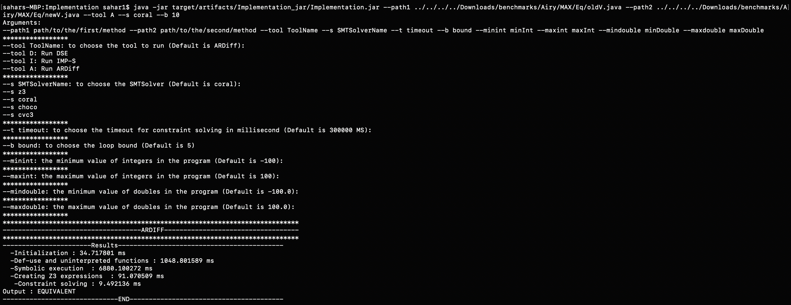

The source code of our framework is available on GitHub.
Installing
Java Runtime Environment version 8 is required. If using JDK 8, you need to copy tools.jar from jdk_1.8../lib to jdk_1.8../jre/lib if absent.
JPF
Pre-built versions of JPF-Symbc. and JPF-core are included in the project under the folder jpf-git.
You need to create in your home directory a .jpf directory and include inside a file name “site.properties”.
A template site.properties file is:
jpf-core = ${user.home}/Desktop/Symbolic_Ex_Proj/ARDiff/Implementation/jpf-git/jpf-core
jpf-symbc = ${user.home}/Desktop/Symbolic_Ex_Proj/ARDiff/Implementation/jpf-git/jpf-symbc
extensions = ${jpf-core},${jpf-symbc}
Z3
For checking the equivalence of symbolic summaries, the Z3 constraint solver is used.
The Z3 library files needed by JPF-symbc for Unix and Windows are provided in our Implementation directory (under jpf-git/jpf-symbc/lib) and must be included in the PATH or LD_LIBRARY_PATH (Linux only) or DYLD_LIBRARY_PATH (Mac only) environnment variable.
You can also add it as an argument to java:
java -Djava.library.path="..../jpf-git/jpf-symbc/lib"
For Mac/Linux users, if you are running into some issues after this step, try adding “/usr/local/lib” as well to the library path.
Executables to run Z3 from the command line are also included in the Implementation folder. You do not need to include the executable to your PATH variable.
You can refer to Z3 for more information or to build Z3 yourself.
Other dependencies
The dependencies for GumTree, and ASM Def-Use are included as well.
Setup
The .jar file running the framework is provided in:
Implementation/target/artifacts/Implementation_jar/Implementation.jar
The project can also be open as a Maven project in an IDE in order to change/update the source code. The main class is Runner.Runner
Usage
You must run the tool from the ARDiff/Implementation folder :
java -jar target/artifacts/Implementation_jar/Implementation.jar --path1 path/to/the/first/method --path2 path/to/the/second/method --tool ToolName --s SMTSolverName --t timeout --bound LoopBoundLimit --minint Integer --maxint Integer --mindouble Double --maxdouble Double
There are 10 arguments for configuring the framework: –path1 and –path2 are mandatory and the other eight are optional.
You need to give the paths to two (compilable) Java classes (with different names), each containing one of the target methods.
Note that the signature (i.e the name and the input parameters) and the return type must be the same for the two methods.
If the classes contain more than one method, the first method is considered as the target method for equivalence checking.
Extra information from running the tools will be stored in the directory of –path1.
You can also choose the tool, the SMT solver used in JPF-Symbc, the bound limit to unroll loops in JPF-symbc and min and max values for integers and doubles.
You can also choose the timeout in milliseconds. This timeout is for constraint solving in both JPF-symbc and Z3, it is not an overall timeout for the tool.
If you want to stop the tool after t seconds, for example 5, you can use any timeout mechanism, such as the Linux timeout command:
timeout 5 java -jar target/artifacts/Implementation_jar/Implementation.jar --path1 path/to/the/first/method --path2 path/to/the/second/method --tool ToolName --s SMTSolverName --t timeout --bound LoopBoundLimit --minint Integer --maxint Integer --mindouble Double --maxdouble Double
To obtain the overall time taken by the tool, in addition to the detailed times (in milisecond) we provide, you can also use timing mechanisms such as the Linux time command which gives you the CPU runtime of the process:
time java -jar target/artifacts/Implementation_jar/Implementation.jar --path1 path/to/the/first/method --path2 path/to/the/second/method --tool ToolName --s SMTSolverName --t timeout --bound LoopBoundLimit --minint Integer --maxint Integer --mindouble Double --maxdouble Double
Example
